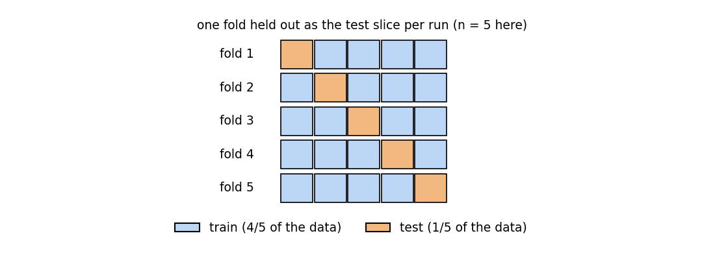
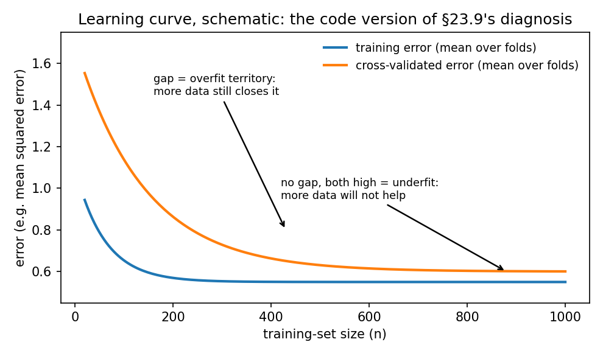

Chapter 39: Model evaluation, cross-validation, hyperparameter tuning
Everything in §§39.1–39.4 comes from the MLP Week-3 “Linear Regression” slide deck (Dr. Ashish Tendulkar, IIT Madras) and the “Notes by Sejal” Week-3 summary; §§39.6–39.7 from the Week-4 “Polynomial regression / Hyperparameter tuning” deck; §39.5 and the LogisticRegressionCV part of §39.8 from the Week-5 classification deck; the course experiments from the Week-3 and Week-4 programming-question solution notebooks. This is the code for §23.9’s overfitting diagnosis, §28.10’s \(\lambda\)-choosing discipline, and §37.9’s hyperparameter sketch — now as full subjects.
A word on what was actually run. sklearn is not installed on this machine (see the chapter task note), so no sklearn call below was executed here. The code blocks are transcribed from the course slides and notebooks — verbatim unless a slide typo forced a fix (each fix is logged in reviews/39-model-evaluation-cv.md). Every number beside the code is either [recorded] — printed as output in the course material itself — or [verified] — worked by hand in this session from definitions (fold index sets, split-MSE arithmetic, variance ratios). The two kinds are marked wherever they could be confused.
Notation. \(X \in \mathbb{R}^{n \times d}\) as usual (chapters 31–38). A hyperparameter is set before training; a parameter is learned by it.
39.1 One test split is a noisy number
The Week-3 deck states the evaluation ritual in four steps:
- STEP 1: Split data into train and test —
train_test_split(X, y, random_state=42)(§36.6’s seeded split). - STEP 2: Fit the estimator on the training set.
- STEP 3: Calculate the training error (a.k.a. empirical error) — how wrong the model is on data it already saw.
- STEP 4: Calculate the test error (a.k.a. generalization error) — how wrong it is on data it never saw.
Then compare training and test errors (§23.9’s whole diagnosis lives in that comparison).
Def (score vs error). A score = a metric where higher is better (\(R^2\)). An error = a metric where lower is better (mean squared error). sklearn needs scores to maximize, so it converts an error metric into a score metric by negating it — the neg_ prefix (§37.5): neg_mean_absolute_error, neg_mean_squared_error, neg_root_mean_squared_error, neg_mean_squared_log_error, neg_median_absolute_error.
But the deck immediately asks the uncomfortable question: if train and test performance look comparable on this one split, is that performance guaranteed on other splits too? Two ways the answer is no:
- Small test set → unstable estimate. The test error is a sample statistic; with few test points it wobbles and “would not reflect the true test error on large test set” (the slide’s words).
- Lucky split → optimistic estimate. “What is the chance that the easiest examples were kept aside as test by chance? This if happens would lead to optimistic estimation of the true test error.”
eg 1 (how loud one split can be — hand arithmetic) [verified]. The slide’s own baseline estimator, DummyRegressor(strategy="mean") (“makes a prediction as specified by the strategy” — here, the training mean), on four labels \(y = (1, 2, 10, 11)\). Test mean squared error for three different 50/50 splits:
| split | train | test | train mean | test MSE |
|---|---|---|---|---|
| A | \(\{1, 2\}\) | \(\{10, 11\}\) | \(1.5\) | \(\frac{(10-1.5)^2 + (11-1.5)^2}{2} = \frac{72.25 + 90.25}{2} = \boxed{81.25}\) |
| B | \(\{1, 10\}\) | \(\{2, 11\}\) | \(5.5\) | \(\frac{(2-5.5)^2 + (11-5.5)^2}{2} = \frac{12.25 + 30.25}{2} = \boxed{21.25}\) |
| C | \(\{1, 11\}\) | \(\{2, 10\}\) | \(6\) | \(\frac{(2-6)^2 + (10-6)^2}{2} = \frac{16 + 16}{2} = \boxed{16.00}\) |
Same model class, same data, one shuffle of luck apart: the estimate swings \(16\) → \(81\). (The solutions volume also works out the leave-one-out number, \(36.44\) — the average over every possible hold-out.) The slide’s remedy: “We use cross validation for robust performance evaluation.”
Note (beat the dummy first). DummyRegressor(strategy="mean"/"median"/"quantile"/"constant") exists so every evaluation starts with a floor: a real model must beat the dumbest sensible predictor. The deck’s \(R^2\) page makes the floor quantitative — “a constant model that always predicts the expected value of \(y\) would get a score of \(0.0\).” If your tuned regressor scores \(0.05\), you have learned almost nothing.
Basically, … “One split gives one number, and the number depends on which rows drew the short straw. Small test set? Unstable. Easy rows in test? Flattering. The fix is to re-split many times and average — that’s all cross-validation is.”
39.2 Cross-validation: the robust estimate
Def (cross-validation). Cross-validation = repeated splitting into training and test parts, producing many train/test errors instead of one — “this enables us to estimate variability in generalization performance of the model” (the slide’s sentence). sklearn’s iterators, all in sklearn.model_selection:
KFold— divide the data into \(k\) folds; each run uses \(k-1\) folds for training and \(1\) for evaluation; rotate the held-out fold.RepeatedKFold— repeat \(k\)-fold \(r\) times with different shuffles (averages out the fold-luck too).LeaveOneOut— \(k = n\): each point gets its own test fold. Maximum data reuse, \(n\) fits — expensive.ShuffleSplit— “random permutation based”: shuffle, split into train/test, repeat \(n\) user-chosen times with a chosentest_size. Not a partition — test sets of different iterations can overlap.

The workhorse call. cross_val_score runs the estimator through the iterator and returns one score per fold:
from sklearn.model_selection import cross_val_score
lin_reg = LinearRegression() # the slide writes linear_regression(); the class is LinearRegression
score = cross_val_score(lin_reg, X, y, cv=5) # KFold, 5 folds -> 5 scoresWith an explicit iterator (the slide’s alternate form):
from sklearn.model_selection import KFold
kfold_cv = KFold(n_splits=5, random_state=42)
score = cross_val_score(lin_reg, X, y, cv=kfold_cv)Note (random_state without shuffle). The slide’s KFold(n_splits=5, random_state=42) never sets shuffle=True — and with the default shuffle=False the folds are deterministic contiguous blocks, so random_state is silently inert (it only takes effect when shuffle=True). Transcribed as written; the caveat is cross-checked against the sklearn docs, and logged in the review.
eg 2 (fold arithmetic — no sklearn needed) [verified]. \(n = 6\) rows, KFold(n_splits=3) without shuffling. The three test index sets are forced by the definition: \(\{0, 1\}\), \(\{2, 3\}\), \(\{4, 5\}\) — each row is tested exactly once, trained on exactly twice. LeaveOneOut on the same data is KFold(n_splits=6): \(6\) fits, test sets \(\{0\}, \{1\}, \dots, \{5\}\).
The repeated version, as the course ran it [recorded]. The Week-4 graded question runs RepeatedKFold(n_splits=2, n_repeats=2, random_state=1) on X = [[1, 2], [3, 4], [1, 2], [3, 4]] and asks for the concatenated train+test indices:
from sklearn.model_selection import RepeatedKFold
ans = RepeatedKFold(n_splits=2, n_repeats=2, random_state=1)
for train, test in ans.split(X):
...
array1 = np.append(train, test) # the course's function returns only the LAST iteration's split
# [0 2 1 3] [recorded]Read it as: in the final repetition’s final split, rows \(\{0, 2\}\) trained and rows \(\{1, 3\}\) were tested (the graded answer’s option (a)). The four splits ran; the function kept only the last one — a quirk of the course’s code, not of RepeatedKFold.
ShuffleSplit, the slide’s third form:
from sklearn.model_selection import ShuffleSplit
shuffle_split = ShuffleSplit(n_splits=5, test_size=0.2, random_state=42)
score = cross_val_score(lin_reg, X, y, cv=shuffle_split)“You define the number of splits and the test fraction; each iteration shuffles and re-splits.” The slide adds that it is “robust to class distribution” — read alongside §39.5: repeated random subsampling averages out split luck, but proportion-matching is the stratified iterators’ job, not this one’s.
Basically, … “KFold is the honest version of the single split: cut the data into \(k\) slices, test each slice once, average the \(k\) numbers. LeaveOneOut takes it to the extreme (\(k = n\), \(n\) fits — slow). RepeatedKFold repeats the cutting to average out fold luck. ShuffleSplit rolls its own random splits. All four answer the same question: what does the test error look like on average, not on one lucky split?”
39.3 cross_val_score vs cross_validate: what they return
The slide draws a sharp line between the two:
cross_val_score— the quick one. Returns a plain array of test scores, one per fold (cv=5→ five numbers). One metric only.cross_validate— the instrumented one. Returns a dictionary with keys:
fit_time,score_time— how long fitting and scoring took per fold,test_score— the per-fold test scores,estimator— the fitted estimator per fold (only withreturn_estimator=True),train_score— the per-fold training scores (only withreturn_train_score=True).
from sklearn.model_selection import cross_validate, ShuffleSplit
cv = ShuffleSplit(n_splits=40, test_size=0.3, random_state=0)
cv_results = cross_validate(regressor, data, target, cv=cv,
scoring="neg_mean_absolute_error")
# cv_results['test_score'] -> 40 numbers; cv_results['fit_time'] -> 40 timingsNeed the fitted models or the train scores (the train/test gap is §23.9’s overfitting signal)? Ask for them:
cv_results = cross_validate(regressor, data, target, cv=cv,
scoring="neg_mean_absolute_error",
return_train_score=True,
return_estimator=True)
# cv_results['estimator'] -> the 40 fitted estimatorsAnd cross_validate — unlike cross_val_score — accepts a list of scorings and computes all of them in the same folds:
cv_results = cross_validate(regressor, data, target, cv=cv,
scoring=["neg_mean_absolute_error", "neg_mean_squared_error"],
return_train_score=True, return_estimator=True)The scoring= menu (the slide’s list, regression): max_error, r2, neg_mean_absolute_error, neg_mean_squared_error, neg_mean_squared_log_error, neg_median_absolute_error, neg_root_mean_squared_error. Two reading rules, straight from the definitions:
- Every
neg_value is \(\leq 0\); negate it to get the error.cross_val_score(..., scoring='neg_mean_squared_error')returning \(-16.04\) means \(\mathrm{MSE} = 16.04\). - sklearn maximizes whatever
scoringnames — theneg_versions exist (§37.5) so that “higher is better” machinery can optimize an error.
Basically, … “cross_val_score answers ‘how good, on average?’ with one array. cross_validate answers ‘how good, how long, and what did each fold’s model look like?’ with a dict — and it can score several metrics at once, which cross_val_score refuses to do. And whenever you see neg_, flip the sign before reading it as an error.”
39.4 Learning curves: §23.9 as code
§23.9 diagnosed overfitting on paper by comparing training and test error at one training size. The slide’s learning_curve asks the follow-up question: how do the two errors move as the training set grows?
from sklearn.model_selection import learning_curve
results = learning_curve(lin_reg, X_train, y_train,
train_sizes=train_sizes, cv=cv,
scoring="neg_mean_absolute_error")
train_size, train_scores, test_scores = results[:3]
# Convert the scores into errors
train_errors, test_errors = -train_scores, -test_scoresThree facts about the shapes (from the call’s semantics): train_size is the \(m\) training sizes tried; train_scores and test_scores have shape \((m, k)\) — one row per training size, one column per fold. The slide’s STEP 2: plot the per-size means (usually \(\pm\) one standard deviation) of the two errors against \(n\), “and make assessment about model fitment: under/overfitting or right fit.”

Reading the curves (the standard reading of the slide’s “under/overfitting or right fit”):
- Both errors high and flat → underfit (§23.9’s \(m = 1\) line). The model can’t express the pattern; more data won’t help — change the model (more features, less regularization).
- Train error low, CV error high, gap still closing as \(n\) grows → overfit that data can cure. More training rows pull the two curves together.
- Gap that stays open at the largest \(n\) → overfit that needs the model changed — §28.9’s trade-off says the dial is now regularization or capacity, not data.
The slide’s second diagnosis sketch works the other axis: “Fit linear models with different number of features … plot #features vs error graph — one each for training and test errors … We can replace #features with any other tunable hyperparameter to do this diagnosis for setting that hyperparameter.” (sklearn’s name for exactly this is validation_curve — flagged as a standard-resource cross-check in the review log; the slide describes the idea without naming the function.)
Basically, … “A learning curve is §23.9’s train-vs-test comparison with the x-axis switched from ‘one dataset’ to ‘how much data’. Two lines: training error (optimistic, falls) and cross-validated error (honest, falls toward it). Both stuck high — your model is too simple, buy capacity. A gap that keeps closing — buy data. A gap that won’t close — buy regularization.”
39.5 Stratified iterators: the classification addition
The Week-5 deck opens with a scope note that organizes this whole chapter’s second half: “Cross validation and hyper parameter search for classification works exactly like how it works in regression setting” — with “a couple of CV strategies that are specific to classification.” Those strategies are the stratified iterators.
The problem (the slide’s): “There may be issues like class imbalance in classification, which tend to impact the cross validation folds. The overall class distribution and the ones in folds may be different and this has implications in effective model training.” A fold that accidentally contains no positives can’t train (or test) the positive class.
The fix (the slide’s): “sklearn.model_selection provides three stratified APIs to create folds such that the overall class distribution is replicated in individual folds”:
StratifiedKFold— \(k\)-fold with each fold’s class proportions matching the whole dataset.RepeatedStratifiedKFold— the repeated version.StratifiedShuffleSplit— the shuffle-split version. Note (the slide’s): “Folds obtained viaStratifiedShuffleSplitmay not be completely different” — test sets can overlap across iterations, so it is repeated subsampling, not a partition.
eg 3 (why plain folds starve — hand arithmetic) [verified]. Eight rows, \(4\) positive / \(4\) negative, sorted positives-first, n_splits=2, no shuffling:
- Plain
KFold: test fold 1 = rows \(\{0, 1, 2, 3\}\) — all positive; test fold 2 = rows \(\{4, 5, 6, 7\}\) — all negative. Fold 1’s model trains on negatives only and is tested on positives only. StratifiedKFold(n_splits=2): each test fold holds \(2\) positives and \(2\) negatives — the \(50/50\) overall split replicated exactly.
The arithmetic is definitional: stratification forces each fold to mirror the dataset’s class fractions.
Basically, … “Plain folds cut the data blindly; on imbalanced or sorted labels a fold can end up with zero examples of a class. The stratified iterators cut each class separately and stack the slices, so every fold is a miniature of the whole dataset’s class mix. For classification, reach for these by default — the Week-5 deck says everything else about CV and HPT is identical to the regression case.”
39.6 The three-way split doctrine: train / validation / test
Hyperparameters are the things cross-validation is for. The Week-4 deck defines them first:
Def (hyperparameter). Hyperparameters = “parameters that are not directly learnt within estimators. In sklearn, they are passed as arguments to the constructor of the estimator classes” — e.g. degree in PolynomialFeatures, the learning rate in SGDRegressor. (Parameters are learned by fit; hyperparameters are chosen by you.) §28.10 did this on paper for \(\lambda\); this section is the code.
Def (hyperparameter search). The slide’s five ingredients: an estimator (regressor or classifier); a parameter space; a method for searching or sampling candidates; a cross-validation scheme; and a score function.
Choosing hyperparameters on the test set would spend the test set — it would become a second validation set, and the final number would be optimistic (§28.10’s discipline). So the slide mandates a three-way split — training, validation, test — and five steps:
- STEP 1: Divide the data into training, validation, and test sets.
- STEP 2: For each hyperparameter combination, learn a model on the training set. Tips (the slide’s): run the combinations in parallel with
n_jobs=-1; some combinations may fail on some folds — seterror_score=0(ornp.NaN) so the search survives a bad combination instead of crashing. - STEP 3: Evaluate each model on the validation set; pick the best-scoring combination.
- STEP 4: Retrain the winner on training and validation combined — the winner deserves the validation rows too, now that their job (choosing) is done.
- STEP 5: Evaluate the retrained model on the test set, once.
The slide’s closing line, the doctrine’s whole point: “Note that the test set was not used in hyper-parameter search and model retraining.” §37.9’s one-line version: spend the test set exactly once.
Basically, … “Three piles, three jobs: train teaches the parameters, validation picks the hyperparameters, test grades the final model — once, at the very end. Touch the test set during tuning and your grade is rigged. The five steps are: split three ways, train every candidate on train, crown the winner on validation, re-train the winner on train+validation, grade once on test.”
39.7 GridSearchCV vs RandomizedSearchCV
The slide’s two generic search strategies:
| Grid search | Randomized search | |
|---|---|---|
| What you specify | exact values of each parameter | distributions over parameter values |
| How candidates are picked | all combinations, exhaustively | sampled from the distributions |
| Budget | forced: grows as the product of the value lists | chosen by you, independent of the number of parameters — the n_iter argument (default \(10\)) |
The course’s grid experiment [recorded]. The Week-4 notebook tunes SGDRegressor on the California housing data (70/30 split, random_state=1, standardized features — the scale-first-then-search shape §39.9 will fix):
from sklearn.model_selection import GridSearchCV
from sklearn.linear_model import SGDRegressor
sgdregressor = SGDRegressor(random_state=1)
sgdr_model = GridSearchCV(sgdregressor,
{'loss': ['squared_error', 'huber'],
'penalty': ['l2', 'l1'],
'alpha': [0.1, 0.01, 0.001],
'max_iter': [1000, 2000, 5000]},
cv=4,
return_train_score=True)
sgdr_model.fit(X_train_norm, y_train)
sgdr_model.best_params_
# {'alpha': 0.01, 'loss': 'squared_error', 'max_iter': 1000, 'penalty': 'l1'} [recorded]
sgdr_model.score(X_test_norm, y_test)
# 0.5951040704728554 [recorded] (test R^2, the once-spent test set)Count the work [verified]: \(2 \times 2 \times 3 \times 3 = 36\) combinations \(\times\) \(4\) folds = \(144\) fits. The winner: squared-error loss, L1 penalty, alpha = 0.01, max_iter = 1000 — and best_params_ hands you exactly that dict.
The course’s ridge experiment [recorded]. Same data, Ridge through GridSearchCV over alpha \(\in \{0.5, 0.1, 0.05, 0.01, 0.005, 0.001\}\) and fit_intercept \(\in \{\mathrm{True}, \mathrm{False}\}\), cv=4:
ridge_model = GridSearchCV(Ridge(),
{'fit_intercept': [True, False],
'alpha': [0.5, 0.1, 0.05, 0.01, 0.005, 0.001]},
cv=4)
ridge_model.fit(X_train_norm, y_train)
# best_params_ -> {'alpha': 0.5, 'fit_intercept': True} [recorded]
# test R^2 -> 0.5971450612248769 [recorded]The course’s randomized experiment — and its warning [recorded]. Lasso through RandomizedSearchCV over a discrete space of \(2 \times 4 = 8\) combinations (fit_intercept, alpha \(\in \{1, 0.1, 0.01, 0.001\}\)), cv=6:
lasso_model = RandomizedSearchCV(Lasso(),
{'fit_intercept': [True, False],
'alpha': [1, 0.1, 0.01, 0.001]},
cv=6)
lasso_model.fit(X_train_norm, y_train)sklearn printed (verbatim from the notebook):
UserWarning: The total space of parameters 8 is smaller than n_iter=10.
Running 8 iterations. For exhaustive searches, use GridSearchCV.and then best_params_ \(\to\) {'fit_intercept': True, 'alpha': 0.001} [recorded], test \(R^2 = 0.6065831805608592\) [recorded]. The moral: random search on a tiny discrete space degenerates into grid search — the warning is the tell. Randomized search earns its keep on large or continuous spaces, where \(10\) (or \(50\), or \(100\)) sampled candidates beat an exponential grid.
The slide’s pipeline grid (the shape §39.9 adopts — typo POlynomialFeatures fixed, logged in the review; §37.9 showed this too):
from sklearn.model_selection import GridSearchCV
from sklearn.pipeline import Pipeline
from sklearn.preprocessing import PolynomialFeatures
from sklearn.linear_model import SGDRegressor
param_grid = [{'poly__degree': [2, 3, 4, 5, 6, 7, 8, 9]}]
pipeline = Pipeline(steps=[('poly', PolynomialFeatures()),
('sgd', SGDRegressor())])
grid_search = GridSearchCV(pipeline, param_grid, cv=5,
scoring='neg_mean_squared_error',
return_train_score=True)
grid_search.fit(X_train, y_train) # slide: x_train.reshape(-1, 1) for 1-D inputpoly__degree is §37.8’s double-underscore addressing: reach inside the named pipeline step and set its hyperparameter. return_train_score=True keeps the train-side CV scores too — the train/CV gap is the overfitting read of §39.4.
refit, the quiet default. The slide’s HPT STEP 4 (retrain the winner on train+validation) is what GridSearchCV does for you automatically: with the default refit=True, after the search it refits the best combination on the whole training data, so best_estimator_ is ready to predict and .score(X_test, y_test) works straight away. (Cross-checked against standard sklearn behavior; logged in the review.)
Basically, … “Grid search tries everything — \(36\) combos \(\times\) \(4\) folds = \(144\) fits in the course’s SGD eg, winner {alpha: 0.01, loss: 'squared_error', max_iter: 1000, penalty: 'l1'}. Randomized search tries n_iter samples — brilliant on big continuous spaces, pointless on an 8-combo space (sklearn literally warns you and runs the 8). The course’s own numbers: SGD \(0.5951\), ridge \(0.5971\), lasso \(0.6066\) — all test \(R^2\), all on the once-spent test set.”
39.8 Model-specific HPT: RidgeCV, LassoCV, ElasticNetCV, LogisticRegressionCV
Grid search is generic; some estimators tune one parameter so efficiently that the CV is built in. The slide’s principle: “Some models can fit data for a range of values of some parameter almost as efficiently as fitting the estimator for a single value of the parameter. This feature can be leveraged to perform more efficient cross-validation used for model selection of this parameter.”
RidgeCV/LassoCV/ElasticNetCV(§37.7’s one-line version; the slide’s details): handRidgeCVthe candidate strengths viaalphas— “the regularization rate must be positive; larger values indicate stronger regularization” (the §37.7 dial).cvpicks the splitting strategy:None→ the efficient Leave-One-Out path; an integer → that many folds; a CV splitter; or an iterable of (train, test) index splits. For binary/multiclass targets withcv=Noneor an integer, the slide saysStratifiedKFoldis used — §39.5’s iterators, inside the estimator. The fitted estimator reports the chosen strength: the slide writes “alphasprovides the estimated regularization parameter” — in current sklearn the winner lives inalpha_(§37.7 already used that name; the slide’salphasis the constructor’s candidate list — logged in the review).LogisticRegressionCV(Week-5 deck): “logistic regression with in-built cross validation support to find the best values of C and l1_ratio according to the specified scoring attribute.” Key parameters:cv(the iterator),scoring(the metric),Cs(the candidate regularization strengths — the slide writes “cs”). Note (cross-check, also inreviews/38-sklearn-classification.md): the slide’sl1_ratiois the current sklearn keywordl1_ratios(a list of candidates, likeCs). And therefitsemantics (also §38.5’s):
refit=True: “scores averaged across folds, values corresponding to the best score are selected, and final refit with these parameters” — one winner \(C\), one final model.refit=False: “the coefs, intercepts and C that correspond to the best scores across folds are averaged” — the answer is an average of fold-winners, no final refit.
When to use which. The slide’s own two options for ridge’s alpha: “[Option #1] built-in cross validation in RidgeCV” (cheap, one parameter) vs “[Option #2] Grid search / Randomized search” (general, many parameters). Same pattern for lasso. If the only dial is the regularization strength, the *CV estimator is the short path; the moment you tune two or more things (say, degree and alpha), it is GridSearchCV over the pipeline.
Basically, … “For one special dial — the regularization strength — sklearn ships estimators with the search baked in: RidgeCV/LassoCV/ElasticNetCV for regression, LogisticRegressionCV for classification (tuning \(C\), with refit choosing between ‘crown one winner and refit’ and ‘average the fold-winners’). One dial → the *CV estimator; several dials → GridSearchCV over a pipeline.”
39.9 The pipeline + search combination: leak-proof HPT
Look again at the course’s grid-search notebook (§39.7): it standardized first (scaler.fit_transform(X_train)), then searched. That works here only because the scaler was fit on the training split. But inside the CV loop the scaler stays fixed across folds while the estimator refits — a mild version of the disease §38.10’s PCA story diagnosed: statistics learned outside the fold loop leaking across it.
The slide’s own poly-degree example (§39.7) shows the structural fix: put the whole pipeline inside the search. Then every fold — and every candidate — gets a pipeline that is fit on that fold’s training rows only, exactly §37.8’s “learn on train, apply everywhere”:
param_grid = [{'poly__degree': [2, 3, 4, 5, 6, 7, 8, 9]}]
pipeline = Pipeline(steps=[('scale', StandardScaler()), # learned per fold, inside the search
('poly', PolynomialFeatures()),
('sgd', SGDRegressor())])
grid_search = GridSearchCV(pipeline, param_grid, cv=5,
scoring='neg_mean_squared_error')
grid_search.fit(X_train, y_train)Three disciplines, one object:
- No leak. The scaler (or imputer, §36.7; or PCA, §38.10) is refit inside every fold on fold-train rows only — the §38.10 leak (“
pca.fiton the test set”, accuracy \(0.5564\) [recorded] vs \(0.9213\) corrected [verified]) becomes structurally un-writable. - One address space.
poly__degree,sgd__alpha— the double underscore (§37.8) tunes preprocessing and model hyperparameters in a single grid. - One verdict.
best_params_/best_score_/best_estimator_describe the whole workflow, not a naked estimator.
The Week-4 deck closes the arc this chapter opened: “Since the polynomial regression uses more parameters (due to polynomial representation of the input), it is more prone to overfitting. We will study how to detect overfitting with learning curves and use of regularization to mitigate the risk of overfitting.” Detect (§39.4) → mitigate (§28.10, §39.8) → verify (§39.6, test set spent once). That is the chapter in one sentence.
Basically, … “Never tune around a pipeline — tune inside one. The pipeline goes into GridSearchCV, the grid addresses steps with __, and every fold refits every learning step on its own training rows. That’s the §38.10 leak made impossible by construction, and it’s why the slide’s poly-degree example wraps the pipeline, not the estimator.”
39.10 Where this goes next
- The honest boundary. The course’s CV story ends here: iterators,
cross_val_score/cross_validate, learning curves, grid/randomized search, the*CVestimators, the three-way split. One natural follow-up the sources do not cover is nested cross-validation (an outer CV loop around the whole HPT, so the reported score isn’t optimistic from model selection itself) — flagged, not invented; the deck never names it. - Debugging the workflow. Chapter 40: when the CV scores print nonsense and the pipeline looks right — §38.10’s shuffle disaster and the leak story are the first two suspects, and this chapter’s iterators are the instrument panel.
- The contract survives.
GridSearchCVhonors the estimator contract (§37.1): itfits,predicts, andscores like any estimator — which is why a search object can sit anywhere an estimator can, including inside another pipeline.
Problem set
- Split variance, by hand.
DummyRegressor(strategy="mean")on \(y = (1, 2, 10, 11)\) (eg 1). (i) Recompute the test MSEs for the three 50/50 splits (A: train \(\{1,2\}\); B: train \(\{1,10\}\); C: train \(\{1,11\}\)). (ii) Compute the leave-one-out MSE for the same model: for each \(y_i\), predict the mean of the other three and average the four squared errors. (iii) In two lines: why does the slide prefer the many-split estimate over any one of your three numbers? - Fold arithmetic. (i) Write the three test index sets of
KFold(n_splits=3)on \(n = 6\) rows, no shuffling. (ii) How many fits doesLeaveOneOutrun on \(n = 6\) rows, and why? (iii) The course’sRepeatedKFold(n_splits=2, n_repeats=2, random_state=1)function printed[0 2 1 3]— say exactly what this array contains, and why only one array is returned when \(2 \times 2 = 4\) splits were run. - Two functions, two returns. (i)
cross_val_score(lin_reg, X, y, cv=5)returns an array of length \(5\) — of what? (ii) List the five keys the slide’scross_validatedict can carry, and say which two need a flag to appear. (iii)cross_val_score(..., scoring='neg_mean_squared_error')returnsarray([-16.04, -18.90, -15.02]). Compute the mean MSE. (iv) Why doescross_validateaccept a list forscoringwhilecross_val_scoredoes not? - Course-sourced metric. The Week-4 practice asks for the explained variance of
y_true = [7, 4, 9, 4],y_pred = [8, 7, 12, 5]. (i) Compute it by hand from \(1 - \mathrm{Var}(y - \hat y)/\mathrm{Var}(y)\) (population variances) and check against the recorded \(0.7777777777777778\). (ii) From the formula: what does a perfect predictor score, and what does a mean-predictor (DummyRegressor(strategy="mean")) score? (iii) The Week-3 practice’s graded answers give explained variance \(0.6605500501742703\) vs \(R^2 = 0.6605140591531992\) on the California test split [recorded] — in one line, why are they nearly but not exactly equal? - Read the curves. (i) A learning curve shows training error \(0.8\) and CV error \(0.82\), both flat from \(n = 200\) to \(n = 2000\). Diagnose in §23.9’s vocabulary and name the fix direction. (ii) Training error \(0.10\), CV error \(0.45\), and the CV curve is still falling at the largest \(n\). Diagnose, and say whether the next experiment should buy data or regularization. (iii) Write the slide’s three unpack lines for
learning_curveresults and the two negation lines; for \(5\) training sizes and \(4\) folds, what is the shape oftrain_scores? - Grid vs randomized. (i) The course’s Lasso search ran on an \(8\)-combination space with
n_iter=10(the default). Quote sklearn’s warning verbatim [recorded] and say what it did instead. (ii) A grid has \(3\) parameters with \(4\) values each andcv=5— how many fits? (iii) In one line each: when is randomized search the better choice, and when is grid search? - The three-way doctrine. (i) List the slide’s five HPT steps in order. (ii) Why does STEP 4 retrain on train+validation instead of just keeping the STEP-3 winner? (iii) The course’s notebook called
sgdr_model.score(X_test_norm, y_test)after the search — which doctrine does this honor, and whichGridSearchCVdefault did the STEP-4 retraining for it? - Spot the leak. The Week-4 notebook ran
scaler.fit_transform(X_train)beforeGridSearchCV. (i) Name the discipline this bends (§36.7 / §37.8 / §38.10) and say what is fixed across folds that shouldn’t be. (ii) Rewrite the search so the scaler is inside the pipeline and the grid still tunes the estimator’salpha— use the double-underscore addressing and name the pipeline steps. - Refit semantics. (i)
LogisticRegressionCV(refit=True)vsrefit=False: one line each, from the slide. (ii) The slide saysRidgeCVreports the estimated regularization strength via “alphas”, but §37.7 reads it fromalpha_. Reconcile the two names using the constructor-vs-fitted-attribute distinction. (iii) You must tune both the polynomial degree and the ridgealphaon a regression task. Name the search object and the estimator choice the slide sanctions, and say whyRidgeCValone is insufficient.
Solutions
Attempt each problem first, then click a problem to reveal its worked solution.
1. Split variance, by hand. \(y = (1, 2, 10, 11)\); model = training mean.
- Test MSEs:
- Split A, train \(\{1, 2\}\): \(\hat y = 1.5\). \(\mathrm{MSE} = \frac{(10-1.5)^2 + (11-1.5)^2}{2} = \frac{72.25 + 90.25}{2} = \boxed{81.25}\).
- Split B, train \(\{1, 10\}\): \(\hat y = 5.5\). \(\mathrm{MSE} = \frac{(2-5.5)^2 + (11-5.5)^2}{2} = \frac{12.25 + 30.25}{2} = \boxed{21.25}\).
- Split C, train \(\{1, 11\}\): \(\hat y = 6\). \(\mathrm{MSE} = \frac{(2-6)^2 + (10-6)^2}{2} = \frac{16 + 16}{2} = \boxed{16.00}\). [verified]
- Leave-one-out. The four hold-outs:
| held out \(y_i\) | mean of other three | squared error |
|---|---|---|
| \(1\) | \(23/3\) | \((1 - 23/3)^2 = (20/3)^2 = 400/9\) |
| \(2\) | \(22/3\) | \((2 - 22/3)^2 = (16/3)^2 = 256/9\) |
| \(10\) | \(14/3\) | \((10 - 14/3)^2 = (16/3)^2 = 256/9\) |
| \(11\) | \(13/3\) | \((11 - 13/3)^2 = (20/3)^2 = 400/9\) |
\[\mathrm{MSE}_{\mathrm{LOO}} = \frac{1}{4}\cdot\frac{400 + 256 + 256 + 400}{9} = \frac{1312}{36} = \frac{328}{9} \approx \boxed{36.44}.\] [verified]
- Any single split’s number is hostage to which rows fell into test — here \(16\) vs \(81\) for the same model. Averaging over many splits (LOO: \(36.44\)) washes out that luck; the slide’s point is that the average is the honest estimate of generalization, not any one draw.
2. Fold arithmetic.
KFold(n_splits=3), \(n = 6\), no shuffling → contiguous blocks: test sets \(\{0, 1\}\), \(\{2, 3\}\), \(\{4, 5\}\). Each row is tested exactly once and trained on exactly twice. [verified]LeaveOneOut=KFold(n_splits=n)= \(6\) fits: test sets \(\{0\}, \{1\}, \dots, \{5\}\), each fit training on the other five rows.[0 2 1 3]=np.append(train, test)for the final loop iteration: rows \(\{0, 2\}\) trained, rows \(\{1, 3\}\) tested in that split. Only one array is returned because the course’s function rebindstrain, teston every iteration and callsnp.appendafter the loop — the first three splits’ indices are silently discarded. (The graded answer’s option (a).) [recorded]
3. Two functions, two returns.
An array of length \(5\) holding the five per-fold test scores (default scoring for the estimator — \(R^2\) for a regressor).
fit_time,score_time,test_score— always;estimator— only withreturn_estimator=True;train_score— only withreturn_train_score=True.Mean of the neg-scores: \(\frac{-16.04 - 18.90 - 15.02}{3} = \frac{-49.96}{3} \approx -16.6533\); negate for the error: \(\boxed{\mathrm{MSE} \approx 16.65}\). [verified]
cross_val_scoreis the thin convenience wrapper: one metric in, one array out.cross_validateis the instrumented worker — it loops the folds once and can accumulate as many metrics per fold as you name.
4. Course-sourced metric. \(y = [7, 4, 9, 4]\), \(\hat y = [8, 7, 12, 5]\).
Residuals \(r = y - \hat y = [-1, -3, -3, -1]\), \(\bar r = -2\): \(\mathrm{Var}(r) = \frac{1^2 + (-1)^2 + (-1)^2 + 1^2}{4} = 1\). \(\bar y = 24/4 = 6\): \(\mathrm{Var}(y) = \frac{1^2 + (-2)^2 + 3^2 + (-2)^2}{4} = \frac{18}{4} = 4.5\). \[\mathrm{EVS} = 1 - \frac{1}{4.5} = 1 - \frac{2}{9} = \boxed{\frac{7}{9} \approx 0.7778},\] matching the recorded \(0.7777777777777778\) to every shown digit. [verified]
Perfect predictor: every residual \(0\) → \(\mathrm{Var}(r) = 0\) → EVS \(= 1\). Mean-predictor: \(\hat y_i = \bar y\) → \(r = y - \bar y\) → \(\mathrm{Var}(r) = \mathrm{Var}(y)\) → EVS \(= 0\). (This is why the slide’s \(R^2\) page gives the constant model \(0.0\) — same floor.)
\(R^2 = 1 - u/v\) uses the raw residual sum of squares; explained variance subtracts the residual mean first (\(\mathrm{Var}(r) = \frac{1}{n}\sum r_i^2 - \bar r^{\,2}\)). On the test set the residuals need not sum to zero (no intercept was fit to them), so the bias correction makes EVS a hair higher: \(0.6605500501742703 > 0.6605140591531992\) [recorded].
5. Read the curves.
Underfit (§23.9’s \(m = 1\) line): both errors high and no train/CV gap, so the model lacks capacity — more data will not move either curve. Fix direction: richer model (more features, weaker regularization), not more rows.
Overfit with a closing gap: train error \(0.10 \ll\) CV error \(0.45\) is §23.9’s overfitting signature, but the CV curve is still falling at max \(n\) — the gap is data-starved, not capacity-wrong. Buy data first; reach for regularization only if the gap plateaus open.
train_size, train_scores, test_scores = results[:3];train_errors, test_errors = -train_scores, -test_scores(the negation undoes theneg_scoring). With \(5\) training sizes and \(4\) folds,train_scores(andtest_scores) have shape \(\boxed{(5, 4)}\).
6. Grid vs randomized.
- Verbatim [recorded]:
UserWarning: The total space of parameters 8 is smaller than n_iter=10.
Running 8 iterations. For exhaustive searches, use GridSearchCV.sklearn ignored the n_iter=10 request and ran all \(8\) combinations (\(2\) fit_intercept \(\times\) \(4\) alpha) — random search degenerated into exhaustive grid search, and the warning says to use GridSearchCV for that.
\(4^3 = 64\) combinations \(\times\) \(5\) folds \(= \boxed{320}\) fits. [verified]
Randomized search wins when the space is large or continuous — the budget (
n_iter) stays fixed while a grid explodes exponentially. Grid search wins when the space is small and discrete enough to enumerate — then it is the exhaustive answer, and random sampling can only miss combinations.
7. The three-way doctrine.
- Split into train/validation/test. 2. Train every hyperparameter combination on train (
n_jobs=-1to parallelize;error_score=0/NaNso one bad combination doesn’t crash the search). 3. Score each on validation; pick the best. 4. Retrain the winner on train+validation combined. 5. Evaluate once on test.
- Split into train/validation/test. 2. Train every hyperparameter combination on train (
The validation rows’ job was selection; once the hyperparameters are frozen, there is no reason to withhold those rows from parameter learning. Retraining on train+validation gives the final model strictly more data at zero selection cost — the choice is already made.
It honors “spend the test set exactly once” (§37.9): the test split was never touched during the search, and this single
.scorecall is its one and only use. The STEP-4 retraining was done byGridSearchCV’s defaultrefit=True, which refits the best combination on the full training data before returning.
8. Spot the leak.
The learn-on-train-only discipline (§36.7’s imputation note, §37.8’s transformer contract, §38.10’s PCA story).
scaler.fit_transform(X_train)fixes \(\mu, \sigma\) before the search, so inside the CV loop every fold’s training rows are scaled with statistics that saw the other folds’ rows — the fold boundary is porous. (Mild here, since it’s still train-only data; fatal in §38.10’s version, which fit on the test set.)Move the scaler inside the searched object so each fold refits it on its own training rows; address the estimator’s dial through the step name:
from sklearn.pipeline import Pipeline
from sklearn.preprocessing import StandardScaler
from sklearn.linear_model import SGDRegressor
from sklearn.model_selection import GridSearchCV
pipeline = Pipeline(steps=[('scale', StandardScaler()),
('sgd', SGDRegressor(random_state=1))])
search = GridSearchCV(pipeline,
{'sgd__alpha': [0.1, 0.01, 0.001]},
cv=4)
search.fit(X_train, y_train)sgd__alpha is the double-underscore addressing (§37.8): step sgd, hyperparameter alpha.
9. Refit semantics.
refit=True: average each candidate’s scores across folds, take the hyperparameter values behind the best average score, and refit once with them — one winning model.refit=False: average the coefs, intercepts, and \(C\) of the per-fold winners instead — the answer is a blend, with no final single fit. (The slide’s words, §38.5.)alphasis the constructor’s candidate list — the values you ask it to try.alpha_is the fitted attribute — the value cross-validation actually chose. The slide names the input side; §37.7 names the output side. Both are right about different objects.GridSearchCVover aPipelineofPolynomialFeatures+Ridge— e.g.param_grid = [{'poly__degree': [2, 3, 4, 5, 6, 7, 8, 9], 'ridge__alpha': [0.5, 0.1, 0.05, 0.01, 0.005, 0.001]}].RidgeCValone is insufficient because its built-in search covers only the regularization strength — it cannot vary the polynomial degree (or any second dial); the slide sanctions exactly this “grid over the pipeline” shape for multi-dial tuning.